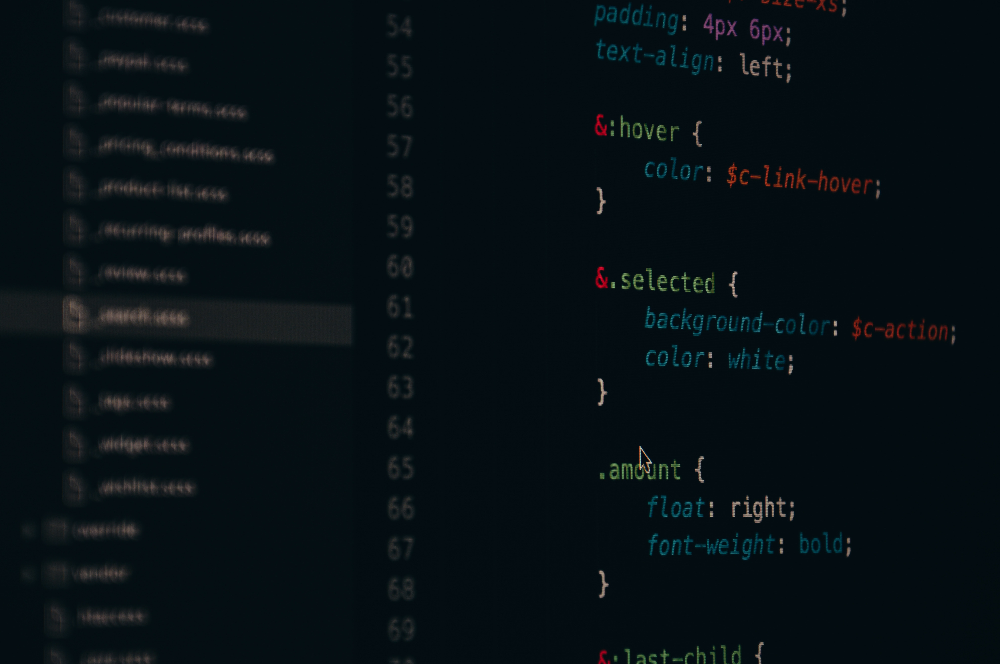
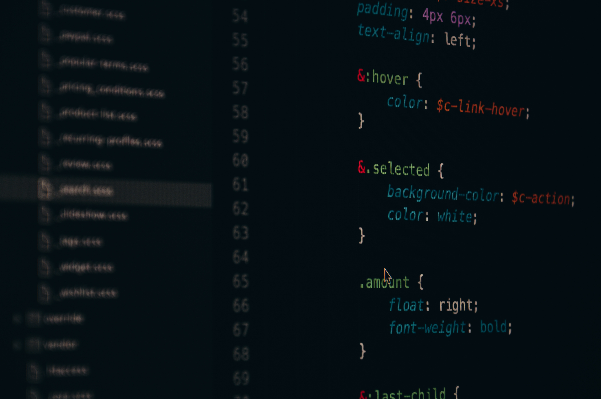
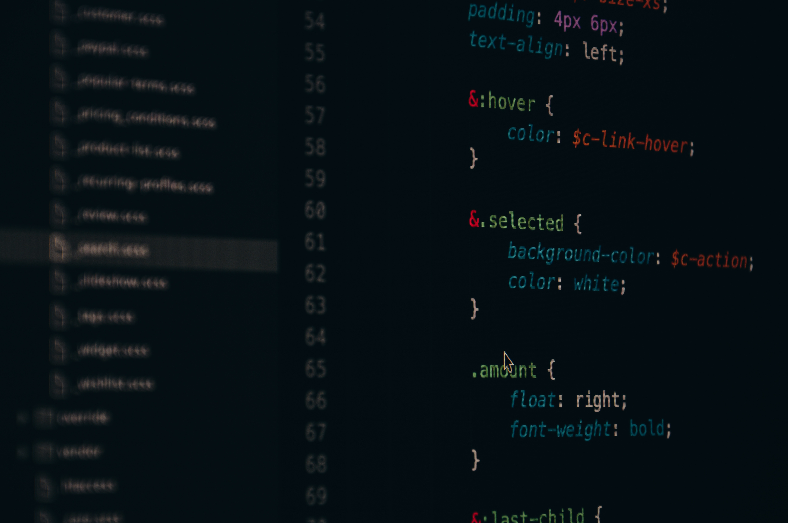

Sarthak Gaur

Sarthak Gaur
My name is Sarthak Gaur from Pune, India. I currently work as RPA Developer at Accelirate Softech India Pvt. Ltd. Since last 3 years around, I have been helping various businesses to achieve maximum benefits and ROI reducing significant number of FTE's for their day-to-day repetitive tasks across various domains like Banking & Finance, Insurance, Retail, Healthcare, Audit & Assurance, and industries using Robotic Process Automation framework along with Intelligent Document Processing and Optical Character Recognition.
Monitored and maintained over 70 automations daily, resolving issues through real-time log analysis to ensure smooth operations Supported UiPath automation processes in incident and change management, ensuring timely resolution of technical issues while adhering to ITIL best practices and minimizing downtime. Completed UiPath Automation Developer Professional Certification (UiADP/UiARD).
Successfully delivered and deployed 5 robust RPA processes utilizing the RE-Framework, achieving an impressive 95% accuracy rate in the client environment.
Made internal project for company to download reports from Jira and send emails to the assignee as an alert who have not entered all the fields also creating a dashboard to keep records for each run.
A representation of my proficiency in each skill
Created a bot to automate the process of managing a Teams inbox by sending a reminder to individuals who have not completed a form. Completed Training and Certification of Blue Prism (AD01).
Collaborated closely with the Center of Excellence (COE) team, actively participating in extensive RPA tool research. Played a key role in identifying the feasibility and cost-effectiveness of various RPA tools. Led the completion of a UiPath proof of concept (POC) for a Citrix client using Intelligent Document Processing (IDP) & OCR. Successfully executed a POC for the internal finance team, automating manual file downloads and calculations across 3 Excel files by implementing customized filters based on specific conditions. Trained over 60 resources for UiPath Associate Certification, assigning a capstone project to reinforce learning outcomes.
Worked on Power BI Desktop and Power BI Service. Created dashboards and apps for multiple reports and integrated the services with SQL Server databases hosted on on-premise servers.
Worked on multiple DLLs and inline .NET snippets for various RPA tools.
In this project, I automated the process of auditing Jira tickets for missing or incomplete information using UiPath. The bot extracted data from Jira, identified fields with missing values using LINQ, and sent dynamic email notifications to the respective assignees specifying the incomplete fields. Additionally, the bot maintained a real-time Excel dashboard to track missing data, email notifications, and overall progress. The solution was built using the REFramework, ensuring scalability, modularity, and compliance with best practices.
| Metric | Before Automation | After Automation |
|---|---|---|
| Manual Effort | 20+ hours/week | <2 hours/week |
| Error Rate | Frequent | Near zero |
| Dashboard Updates | Manual & Delayed | Automated & Real-Time |
| Cost Savings | High Operational Costs | Significant Reduction |
© Copyright Sarthak Gaur 2024